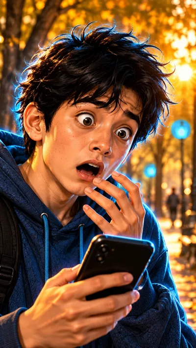

6b-sahna — 9:16 (tik), 8 s

Ovoz
Diyor: «Ataylab-a?!»
Kamera: keskin yaqinlashish (yuzga)Vertical 9:16, 8 seconds. Start from the attached image. Camera: fast snap zoom-in (crash zoom) on Diyor's shocked face, ending in an extreme close-up of his eyes and open mouth. Action: DIYOR SPEAKS one short shocked word, his eyes grow even wider, eyebrows jump up, his hand freezes at his chin, then he blinks twice in disbelief. Dialogue: Diyor says in Uzbek, in a lighter young male voice of about 22: "Ataylab-a?!" Keep every character exactly as in the image for the whole clip: Usta about 30 with a fuller face, short full black beard, black doppi with white arch pattern, dark embroidered chapan with a red sash; Diyor about 20 with a round boyish face, messy straight jet-black hair, navy hoodie, thin cyan-blue glow outline. Same faces, same age, five fingers on each hand. The street lamps glow cool neon blue, exactly as in the image, and stay blue. No text, no subtitles, no logos, no watermark. The camera keeps moving as described for the whole 8 seconds and is never static.